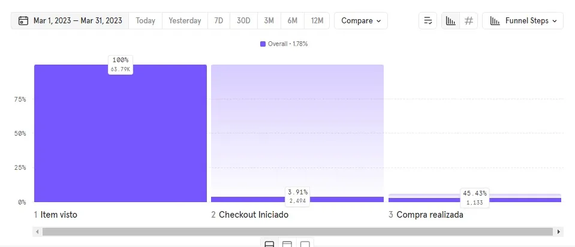
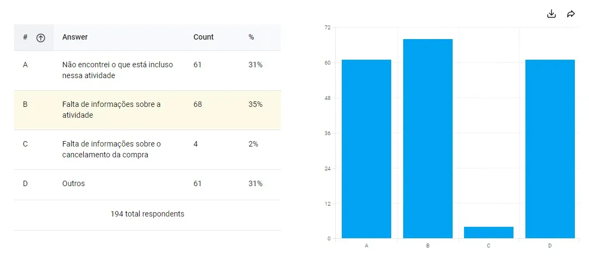
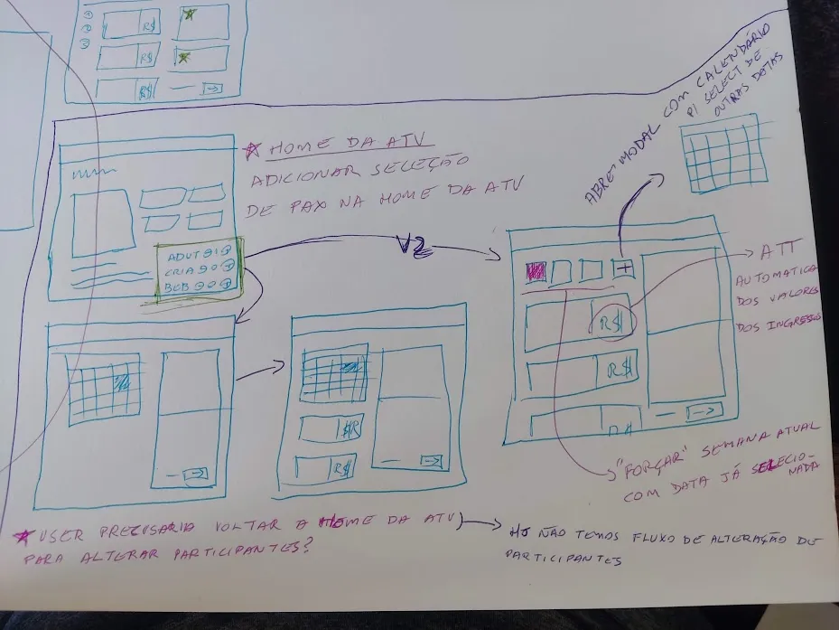
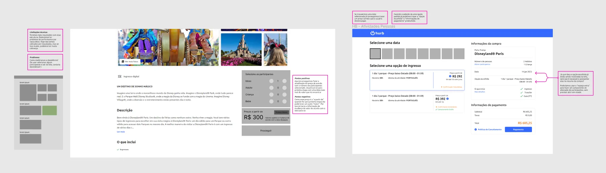
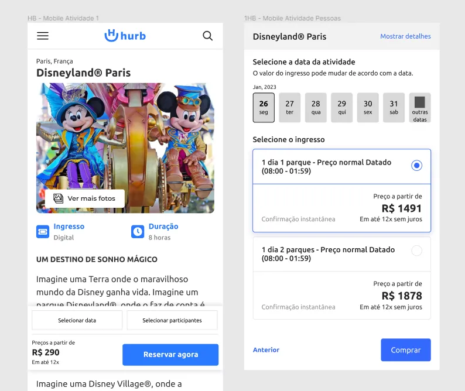
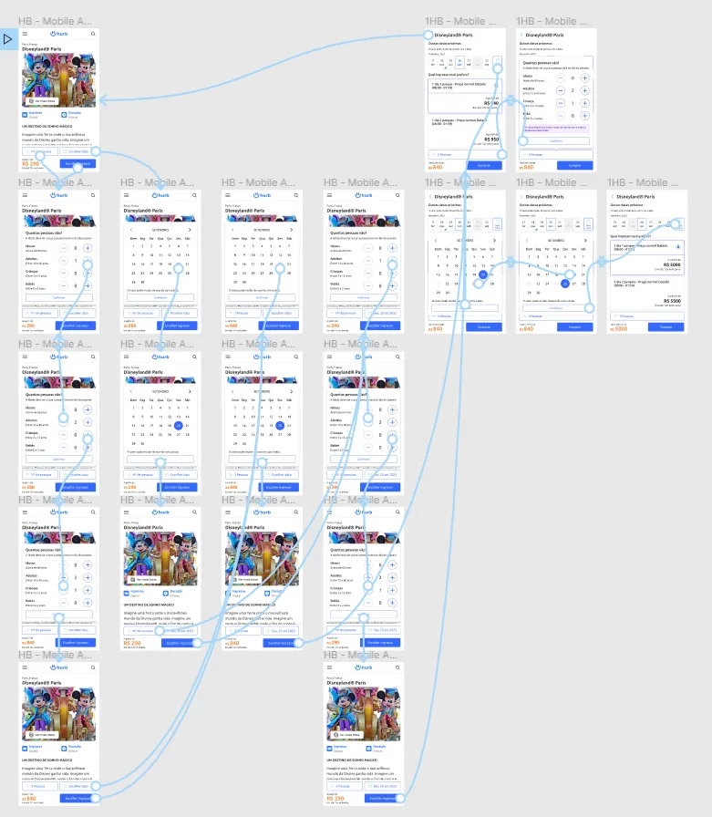
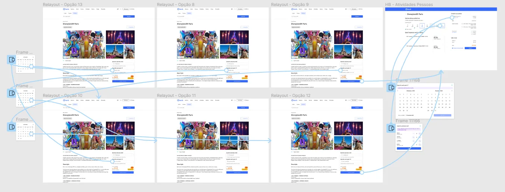

Gostou deste case?
Acredito que também vai gostar de ver estes outros cases.
Redesign do fluxo de compra que reduziu 4 etapas para uma única página, resolvendo a falta de visibilidade dos itens selecionados e elevando o CTR de checkout em 62%.
Atividades era um dos três maiores produtos da Hurb — apesar de relativamente novo, lançado em 2020, já trazia um faturamento expressivo para a empresa. O fluxo de compra se resumia a quatro etapas: seleção de participantes, escolha de data, seleção da opção de ingresso e checkout, cada uma em uma tela separada.
Um fluxo desnecessariamente longo e complexo para realizar a tarefa de compra.
Identificar a causa raiz do abandono de carrinho no fluxo de compra de atividades e propor uma solução que reduzisse a fricção, aumentando a taxa de conclusão de compra sem perder informação relevante para o usuário durante o processo.
A investigação foi dividida em três frentes complementares:
Research — análise de dados, survey e entrevistas para identificar a causa real do abandono
Ideação — benchmarking, esboços e concepção da solução de fluxo condensado
Prototipação e testes — wireframes, alta fidelidade navegável e validação com usuários
Depois de encontrar a atividade que gostaria de comprar, o usuário selecionava a quantidade de participantes por faixa etária, era levado a um calendário para escolher a data — podendo esbarrar em indisponibilidade de ingressos — e só então via as opções de ingresso disponíveis para a combinação escolhida. Por fim, seguia para o checkout.
Ao entrar na squad de Atividades, a análise do fluxo de compra no Google Analytics revelou uma quantidade enorme de abandonos — e uma etapa específica se destacava como a mais crítica.

Sem ainda saber o motivo exato, uma survey CSAT adaptada foi disparada via Hotjar na etapa em que o usuário abandonava a compra.

A análise apontou que o principal motivo do abandono era a falta de visibilidade do que estava sendo comprado nas etapas finais — os usuários perdiam de vista o que haviam selecionado, ficavam inseguros e muitos não retomavam a compra. Oito entrevistas com respondentes da survey confirmaram o mesmo padrão de insegurança e falta de visibilidade.
Com os dados compilados, o processo seguiu para benchmarking e rabiscos em papel em busca das melhores soluções.

O ponto central da solução foi reduzir as quatro etapas do fluxo — promoção da atividade → seleção de participantes → seleção de data → escolha da opção — condensando seleção de participantes e data diretamente na página de promoção da atividade, com verificação automática de disponibilidade no calendário.
Na etapa de escolha do ingresso, um componente de resumo de compra e pagamento permitiu alterar participantes e data sem voltar telas. O fluxo saiu de 4 etapas para uma única página de decisão, com sensação de processo mais conciso e menos agressivo.
A ideia definida virou wireframes no layout atual da Hurb, para visualizar como a solução seria apresentada.


Após refino em design critique com o time de product design, a prototipação de alta fidelidade navegável foi testada com usuários reais.


O resultado dos testes foi muito positivo: todos os participantes destacaram a facilidade de concluir o fluxo e a visibilidade das informações das etapas anteriores.
Com os ajustes finais aplicados, os arquivos e a documentação técnica foram organizados e entregues ao time de desenvolvimento.
Acredito que também vai gostar de ver estes outros cases.